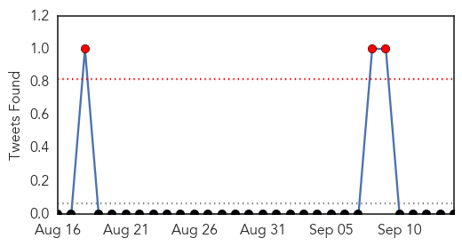

Bubonic Plague
30-Day Web Trend
5 alerts, 3 warnings

30-Day Twitter Trend
0 alerts, 0 warnings

Article Locations

Article Confidences

Top Articles:
- 0.832
- BREAKING: Michigan Health Officials Confirm Bubonic Plague
- 0.832
- BREAKING: Michigan Health Officials Confirm Bubonic Plague
- 0.772
- Marquette County resident contracts plague in Colorado - IronMountainDailyNews.com
- 0.752
- Mich. resident contracts plague on Colorado trip
- 0.712
- Michigan resident tests positive for plague
- 0.683
- Case of bubonic plague confirmed in Michigan, no concern regardi
- 0.640
- U.P. teacher 1st in Michigan to contract plague
Top Tweets:
-
No tweets found for Sep 14, 2015
Dengue Fever
30-Day Web Trend
6 alerts, 1 warnings
30-Day Twitter Trend
4 alerts, 0 warnings

Article Locations

Article Confidences

Top Articles:
- 0.994
- Dengue deaths under-reported in Delhi
- 0.994
- Tainan Enterprises : Dengue fever escalation sets single-day record: CDC
- 0.993
- Delhi battles severe dengue outbreak, 'worst yet to come'
- 0.991
- Health scare: Dengue cases past 1,800, CM Arvind Kejriwal says tackle panic
- 0.990
- Delhi Government Cancels Leave Of Doctors, Launches Helpline To Tackle Dengue Outbreak
- 0.982
- Overworked doctors, patients sharing beds: Health Minister, please get more serious about dengue
- 0.982
- Delhi to buy 1,000 new beds, deploy more doctors
- 0.981
- Dengue out of control, no chutti for doctors
- 0.979
- Dengue scare grips Delhi, 613 fresh cases in a week
- 0.971
- Dengue cases up in Marinduque
- 0.971
- Dengue cases rise nearly to 200 in Gurgaon
- 0.970
- Tainan Enterprises : Taipei confirms new case of dengue fever, bringing total to 12
- 0.967
- Delhi orders extra hospital beds to tackle dengue cases
- 0.965
- Rise in dengue cases prompt MCD to step up action
- 0.965
- Parents' suicide over son's death forces Delhi to tackle dengue
- 0.959
- Centre: Check fleecing by pvt hospitals in capital
- 0.958
- Delhi Govt told to clamp down on pvt hospitals overcharging dengue patients
- 0.956
- 1,000 more beds for dengue patients in city govt hospitals
- 0.953
- Stung by couple's suicide over son's death, Delhi to tackle dengue
- 0.953
- Latest Political News, Business, Sports News, Entertainment News World News, Features, Video and Infographics
- 0.953
- More doctors, paramedics to be deployed to tackle dengue
- 0.952
- City dengue toll goes up to 11
- 0.950
- Union Health Minister reviews preparedness on Dengue
- 0.949
- Taiwan forms command center to combat dengue fever
- 0.948
- Rising dengue casualties:government hospitals cancel doctors, nurses, para-medics' leave
- 0.943
- North civic body opens fever clinics in its five hospitals, all polyclinics
- 0.937
- Taiwan forms command center to combat dengue fever
- 0.936
- Parents' suicide over son's death forces Delhi to tackle dengue
- 0.932
- Delhi orders extra hospital beds after dengue outbreak
- 0.930
- Taiwan dengue outbreak: Dengue NS1 antigen test to be covered by National Health Insurance
- 0.925
- Rise in dengue cases prompt MCD to step up action
- 0.924
- Dengue: Delhi hospitals told to buy 1,000 beds
- 0.920
- Dengue menace: Govt hospitals asked to open 'Fever Clinics' in Delhi
- 0.893
- Delhi govt asks hospitals to open Fever Clinics
- 0.889
- Govt to buy 1000 beds for dengue patients
- 0.889
- Pacific prepares for strengthening El Niño - World
- 0.887
- Dengue: Centre orders action for overcharging for tests
- 0.885
- Dengue menace: Govt hospitals asked to open Fever Clinics
- 0.870
- Govt Hospitals Asked To Open Fever Clinics In Delhi
- 0.870
- Dengue: Centre orders action for overcharging for tests
- 0.863
- Dengue Situation Under Control, Says Delhi Health Minister
- 0.861
- Delhi BJP flays AAP govt over 'failure' to check dengue spread
- 0.856
- Pacific region prepares for strengthening of El Nino: UN
- 0.849
- Delhi govt asks MCDs to go for door-to-door dengue preventive
- 0.839
- Delhi BJP Slams AAP Govt Over ' Complete Failure' In Checking Dengue Menace
- 0.791
- 1,000 new beds for dengue patients in hospitals
- 0.776
- Delhi BJP flays AAP govt over 'failure' to check dengue spread
- 0.775
- Dengue can get worse in Delhi in coming days
- 0.774
- Taipei confirms new case of dengue fever, bringing total to 12
- 0.767
- Dengue: Centre asks Delhi govt to increase hospital beds
Showing top 50 articles...
Top Tweets:
- 0.593
- RT: A School of Public Health study uses cell-phone records to predict the spread of dengue fever. http://t.co/VFHgoJQMCy